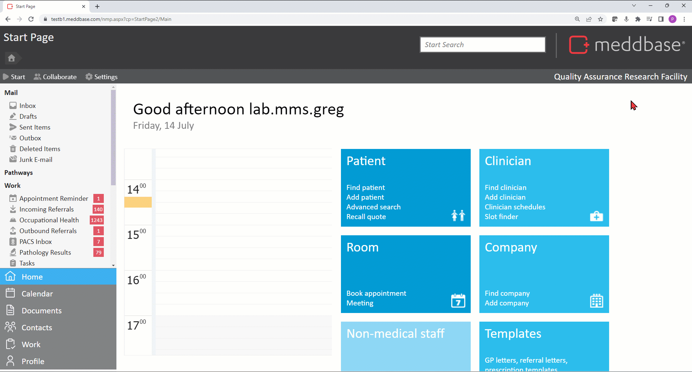
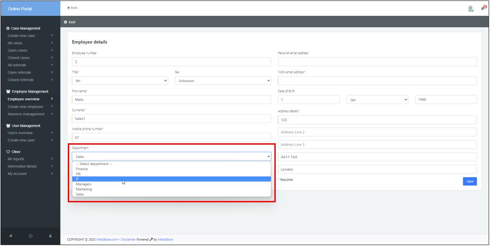
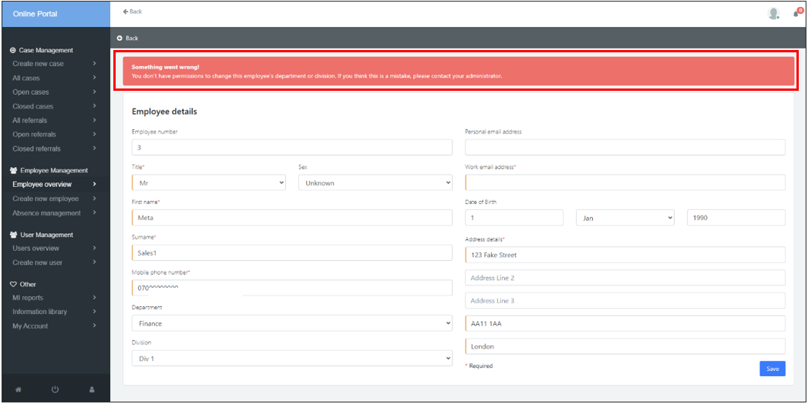

This new feature enables or disables temporary access for managers on the OH portal to update and change departments of employees outside of their department.
This is to allow you to have greater control over what actions managers can take when referring a patient that they are not the department manager for.
You will need to navigate to Admin > Configuration > Online Portal.

Once this feature is enabled, managers will be able to update the department their employee works in on the OH Portal.
A manager can create a new case or a referral for an employee outside of their department. Once this is complete, the manager will be able to view and edit personal details. If the manger wishes to view shared record items other than those included in the referral they are making then the manager will need to ensure that the employee is in the correct department.
By gaining temporary access, the manager can edit the employees personal details and update the department which will provide full access to the information shared with them by the OH team.

If a manager cannot change the department of an employee, they will receive a pop up notification in red. This means that the feature has not been enabled an therefore the manager is disabled from making this change. To resolve this, temporary access needs to be given.
